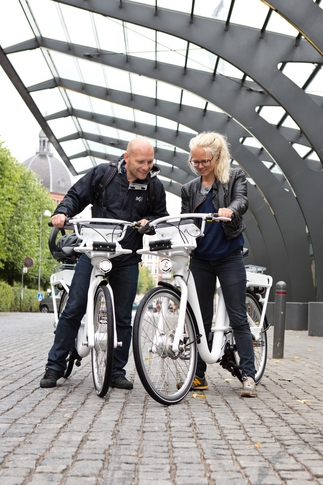
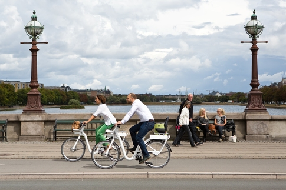
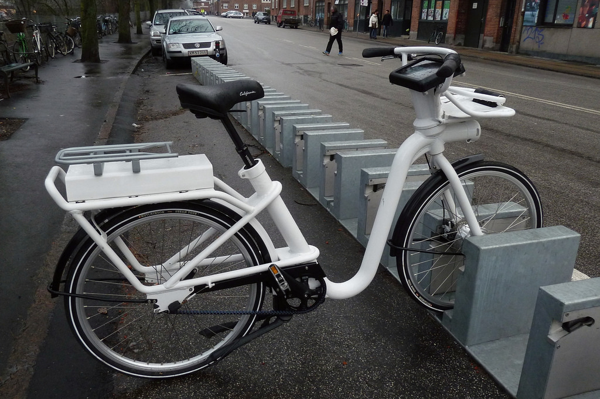

Images from Copenhagen's Bike Share




The Copenhagen City Bikes was the city's first bike sharing system that was implemented in 1995. It had features such as (refundable) coin deposit, fixed stands, and specifically designed bicycles with parts that cannot be used on regular bicycles. Due to budget constraints to upgrade the system, the city terminated the system. However in 2014, the Bycyklen bike sharing system was launched and marketed as the world's first smart bike. It boasted innovations such as a touch screen tablet with a GPS routing system and puncture-free tires. The bike share's purpose was the provide a way for riders in Copenhagen to use the bicycles in tandem with mass transit for their daily commute.
For more information on Copenhagen's bike share, please go to the Bycyklen website.
Before taking a trip to Copenhagen, set up a user account at home on the Bycyklen website. Users can set up from two types of accounts:
For multiple trips: Consider the monthly subscription for DKK 70/month. Every ride under 30 minutes are free and costs 6kr/hour after the free 30-minute period.
For a few trips: Make a "single trip" account. The hourly fee for this account is DKK 25/hour. You can even make an account directly on the bike's tablet.